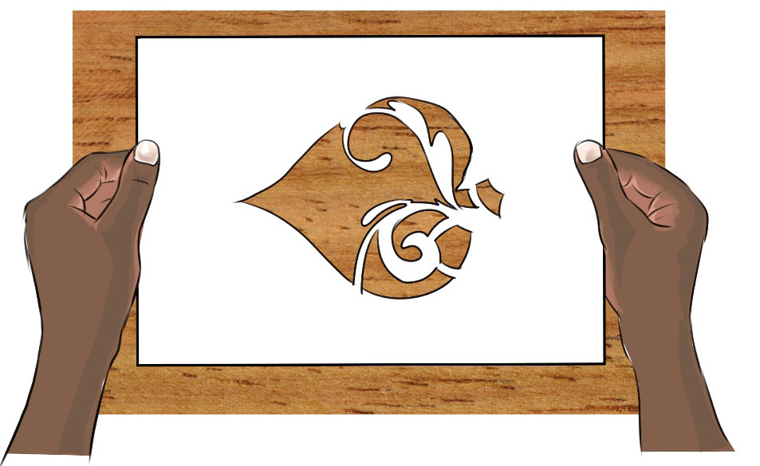
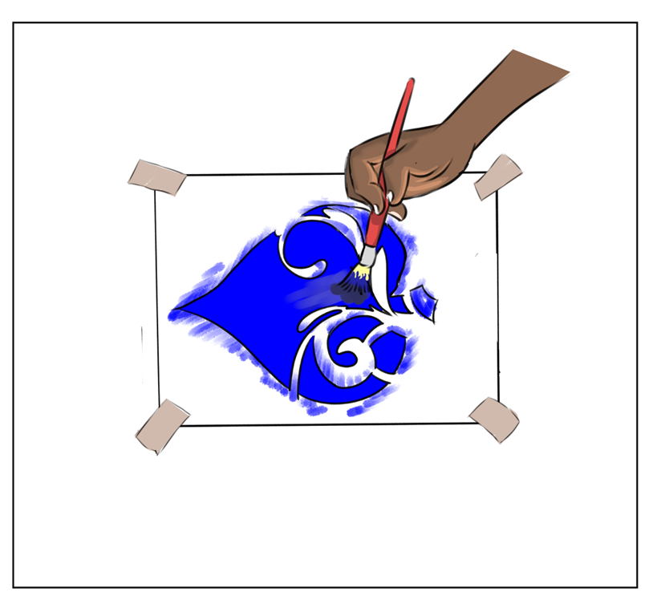

Print the design: The design should be printed on paper in black and white manila paper is useful since it is hard. Cut the stencil: Trace the design onto the stencil paper and cut out the stencil to expose the design. Materials preparation: Collect all the necessary materials, such as ink and the materials to be printed on. Stencil printing: Lay the stencil on the item to be printed, such as a T-shirt, fabric, or paper, and then use a squeegee to apply the ink. After that, take off the stencil and let it dry.

